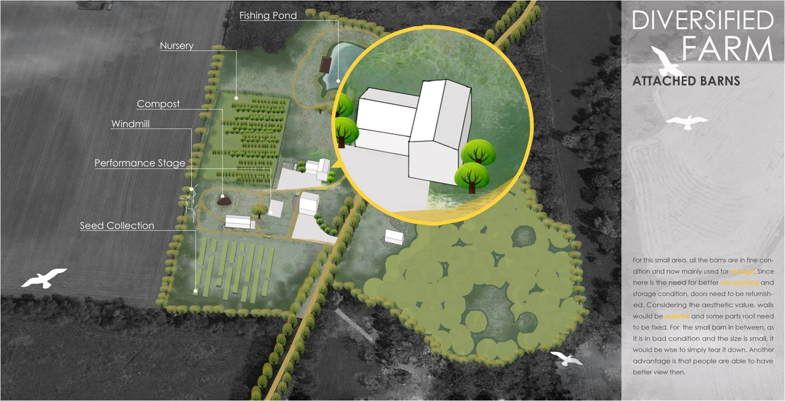
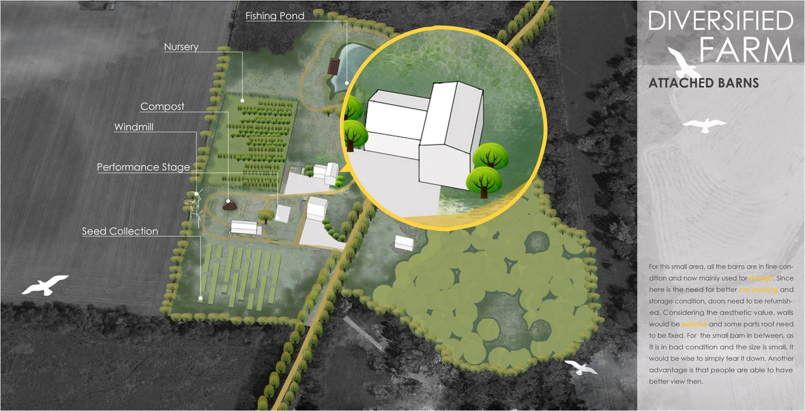
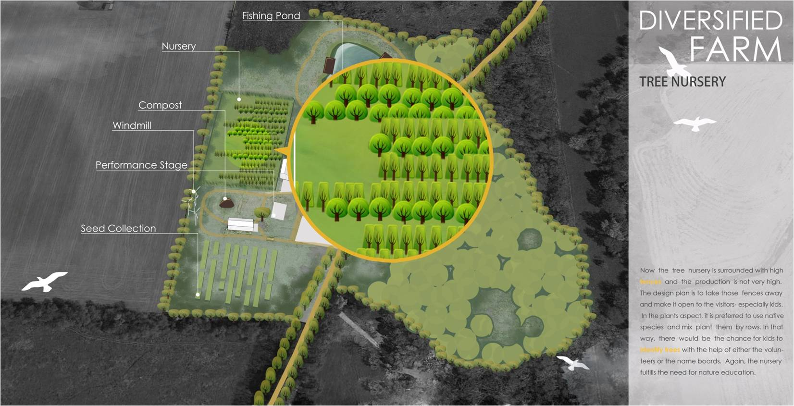
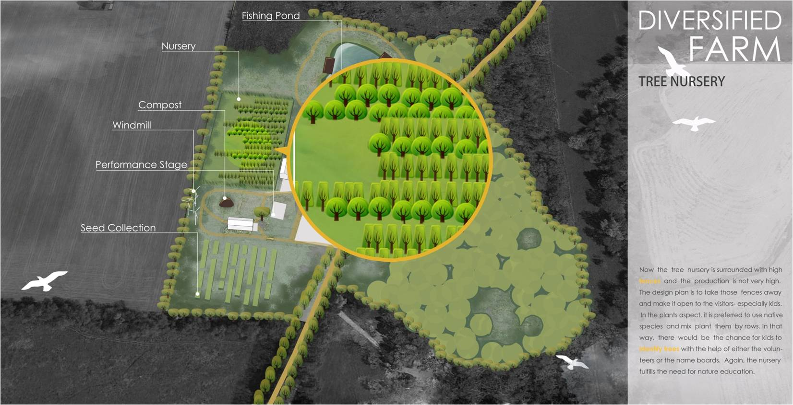

 



NARRATIVE
This is a proposal for the real site- Allerton Park and Retreat Center. It used to be a private property and now donated to University of Illinois. On the Northeast side of it, there is a deserted "diversified farm". To bring this area back into vigor and vatality , new approaches are applied.
Through the process, the designer have had several meetings with the associate manager and the sub-committee to get their ideas, thoughts and requirements. Based on those, she deliberately thought as a professional landscape designer.
The grand idea is bringing educational value to this place and making it more "kid- friendly". Given the existing barns, outdoor spaces and pond, making them into the best value is the guiding idea.
Renderings of the ideas are quite self- explanatory.